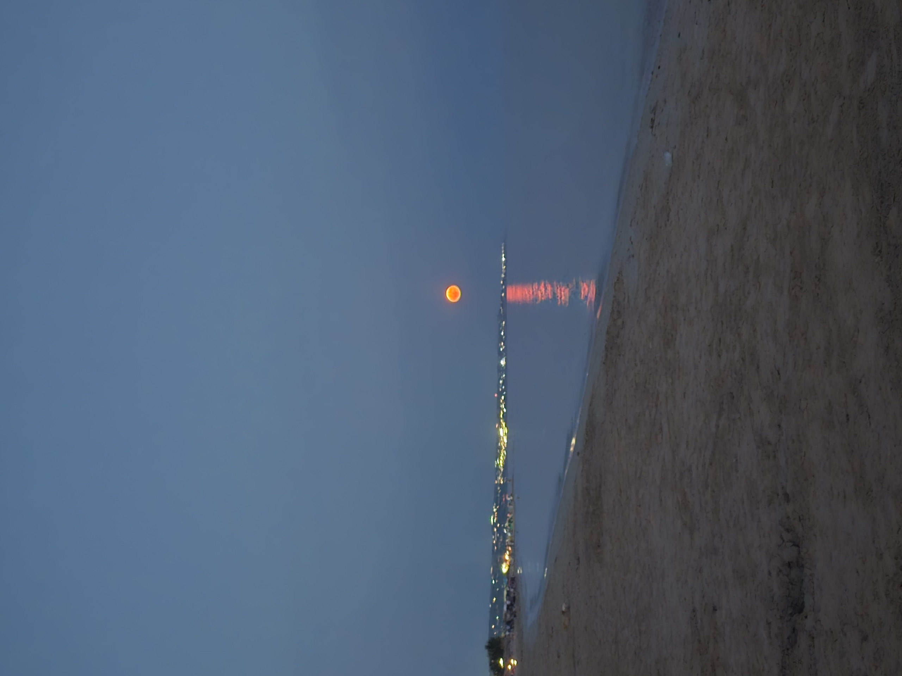
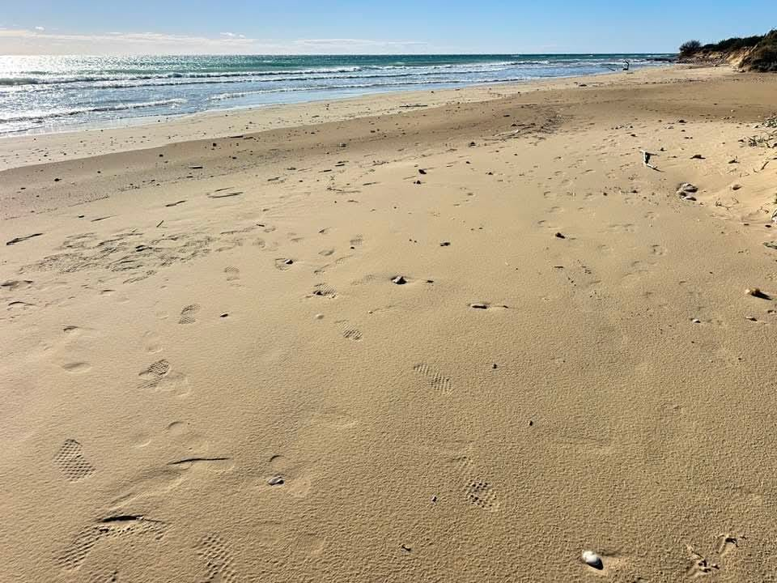
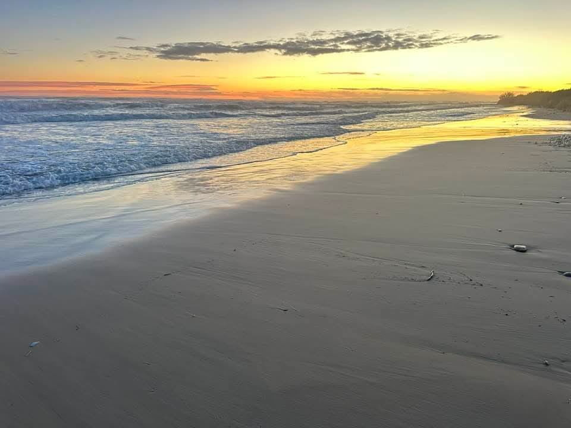
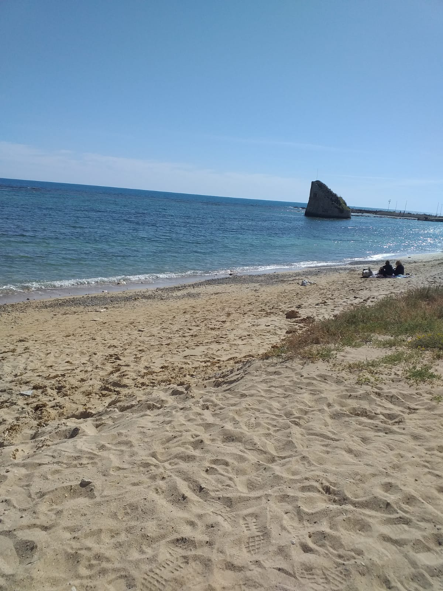
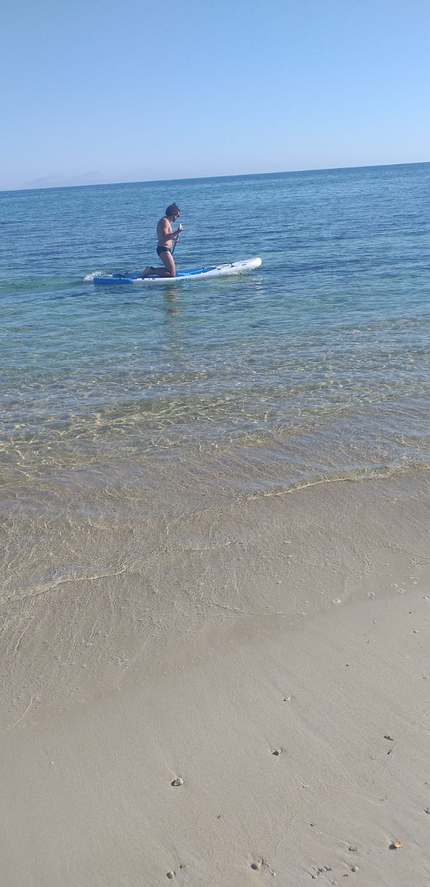
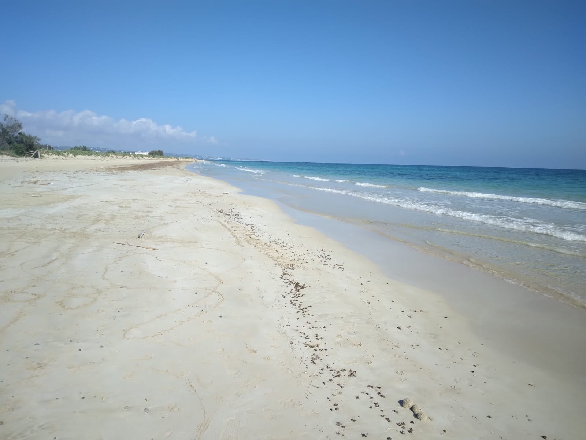

🏝️ Torre Pali: Guida 2026 a Spiagge, Mare, Storia e Vacanze
Scopri Torre Pali, Salento: spiagge Bandiera Blu, Isola della Fanciulla, molo, storia, cosa vedere e dove dormire vicino al mare.
Scopri anche: Pescoluse | Lido Marini | Torre Vado | Tutte le spiagge | Case vacanza












🌊 Torre Pali: Dove si trova e perché sceglierla
Torre Pali è una piccola frazione marina di Salve, situata nella punta più meridionale del Salento, in provincia di Lecce. Questa località balneare rappresenta una delle destinazioni più affascinanti e autentiche della Puglia, dove il mare cristallino incontra la tradizione millenaria del Sud Italia.
Con le sue spiagge premiate dalla Bandiera Blu per la qualità delle acque e dei servizi, Torre Pali è diventata negli ultimi anni una meta ambita da famiglie, coppie e giovani che cercano un'esperienza di vacanza autentica, lontana dal turismo di massa ma ricca di fascino e bellezze naturali.
Bandiera Blu
Acque cristalline premiate per qualità e pulizia
Storia
Torre costiera del XVI secolo
Gastronomia
Cucina salentina autentica
📍 Dove Si Trova
Torre Pali si affaccia sul Mar Ionio, a soli 70 km da Lecce e 120 km dall'aeroporto di Brindisi. La sua posizione strategica la rende facilmente raggiungibile e al tempo stesso un punto di partenza ideale per esplorare tutto il Salento: da Gallipoli a Santa Maria di Leuca, dalle grotte di Castro alle spiagge di Pescoluse.
🏖️ Le Spiagge
Le spiagge di Torre Pali sono caratterizzate da sabbia finissima e dorata, fondali bassi e digradanti perfetti per le famiglie con bambini, e un mare dai colori spettacolari che vanno dal turchese all'azzurro intenso. La costa si estende per diversi chilometri, alternando spiagge libere attrezzate con ombrelloni e lettini a tratti di costa selvaggia dove la natura domina incontrastata.
Il litorale è protetto da correnti e venti grazie alla sua conformazione naturale, rendendo il mare quasi sempre calmo e ideale per nuotate rilassanti. La bassa profondità per molti metri dalla riva permette anche ai più piccoli di giocare in sicurezza nell'acqua cristallina.
Visibilità fino a 10 metri
Ideale per bambini
Windsurf, SUP, kayak
Sul mare Ionio
🏰 La Torre di Guardia
Il nome Torre Pali deriva dall'antica torre di avvistamento costruita nel XVI secolo come parte del sistema difensivo costiero contro le incursioni dei pirati saraceni. La torre, ancora visibile e ben conservata, rappresenta un importante testimonianza storica e un simbolo della località.
Queste torri costiere, costruite durante il dominio spagnolo del Regno di Napoli, formavano una rete di comunicazione visiva lungo tutta la costa pugliese. Quando venivano avvistati pirati all'orizzonte, i guardiani accendevano fuochi sulla sommità della torre per allertare le torri vicine e l'entroterra.
🏖️ Servizi Balneari
Le spiagge di Torre Pali offrono sia tratti liberi che stabilimenti balneari attrezzati con ombrelloni, lettini, bar, ristoranti, docce, servizi igienici e assistenza bagnanti. Molti lidi organizzano attività sportive, corsi di acquagym, animazione per bambini e serate musicali.
⛱️ I Migliori Lidi di Torre Pali
Scopri gli stabilimenti balneari più apprezzati di Torre Pali, ognuno con le proprie caratteristiche e servizi per rendere perfetta la tua giornata in spiaggia. Puoi raggiungere comodamente tutti i lidi passeggiando in spiaggia tra Torre Pali e Pescoluse.
Lido Gold
In uno degli angoli più suggestivi del Salento. Magico connubio tra relax, natura e cibo in atmosfera carica di profumi mediterranei. Raffinatezza, eleganza e servizio attento con pescato locale, carni selezionate e carta vini ricercata.
Lido Elite
Meravigliosa spiaggia di sabbia finissima in uno degli angoli più magici del sud Salento. L'ampio spazio tra ombrelloni e lettini garantisce comfort e tranquillità, anche nelle giornate più affollate.
Lido Tropical
Incorniciato dalle dune e dalla macchia mediterranea, splendida vacanza all'insegna di sole, relax e mare cristallino. Ampio spazio tra ombrelloni e lettini per garantire comfort e tranquillità.
Calòma Beach
Situato a Pescoluse, nel cuore del Salento, offre sabbia dorata e mare cristallino. Lido ben organizzato con ombrelloni, lettini, bar, ristorante e attività acquatiche. Ideale per famiglie, coppie e chi cerca relax e comfort in una delle spiagge più belle d'Italia.
Reem Restaurant - Beach
Sulla costa salentina tra Pescoluse e Torre Pali. Servizio unico con stabilimento balneare, zona relax, zona bambini, ristorante, pizzeria e braceria. Un'esperienza di piacere e relax in simbiosi con il paesaggio salentino.
Brisa Beach House
Affacciato sul Mar Ionio, protetto dall'antica torre. Luogo perfetto per vivere ogni momento in atmosfera accogliente: colazione, pranzo vista mare, aperitivi al tramonto e cocktail dopocena. Ombrelloni e lettini per godersi la splendida spiaggia.
AGRI BEACH eden Salento
Il primo AGRI-BEACH d'Italia a Pescoluse. Terreno retro dunale di 5 ettari dove si coltivano ortaggi e prodotti biologici freschi per la ristorazione. Cucina espressa anche vegana e vegetariana, area green con campo da volley e mini club. Pet-friendly.
💡 Info Utili sui Lidi
💰 Prezzi Medi: €15-30 al giorno per lettino e ombrellone
📅 Prenotazione: Consigliata in alta stagione (luglio-agosto)
🍽️ Ristorazione: La maggior parte dei lidi ha bar e ristorante interno
🏐 Attività: Beach volley, bocce, racchettoni, corsi fitness
👶 Bambini: Area giochi, animazione e fasciatoio in molti lidi
🐕 Animali: Alcuni lidi hanno aree pet-friendly, informarsi prima
🚿 Docce: Docce calde, spogliatoi e servizi igienici inclusi
📶 Wi-Fi: Disponibile gratuitamente nella maggior parte dei lidi
🏝️ Isola della Fanciulla: simbolo di Torre Pali
A pochi metri dalla costa di Torre Pali emerge dall'acqua cristallina un piccolo isolotto roccioso conosciuto come Isola della Fanciulla (o Isola della Fanciulla di Torre Pali). Questo scoglio, raggiungibile facilmente a nuoto o con un breve tragitto in canoa, è uno dei simboli più fotografati e amati della località.
📖 La Leggenda dell'Isola
Secondo un'antica leggenda salentina, l'isola prende il nome da una giovane fanciulla che, innamorata di un pescatore, attendeva ogni giorno il suo ritorno dal mare su quello scoglio. Un giorno il giovane non fece più ritorno, disperso durante una tempesta. La fanciulla continuò ad attendere sullo scoglio fino a quando, consumata dal dolore e dalla disperazione, si trasformò in pietra, diventando parte dell'isola stessa.
La leggenda vuole che nelle notti di luna piena si possa ancora vedere la sagoma della fanciulla che scruta l'orizzonte in attesa del suo amato. Questa storia romantica e malinconica ha reso l'isola un luogo simbolico per gli innamorati, che spesso la raggiungono a nuoto per scattare fotografie e lasciare piccoli ricordi.
🏊 Visita all'Isola
L'Isola della Fanciulla dista circa 100-150 metri dalla riva ed è facilmente raggiungibile:
5-10 minuti, mare calmo e basso
Noleggio disponibile sulla spiaggia
Pesci colorati e fondali rocciosi
Panorama mozzafiato al tramonto
L'isolotto è costituito da rocce calcaree ed è circondato da fondali ricchi di vita marina. Per gli appassionati di snorkeling, l'area intorno all'isola offre l'opportunità di osservare piccoli pesci mediterranei, ricci di mare, stelle marine e una ricca vegetazione sottomarina.
⚠️ Consigli per la Visita
✅ Migliore Orario: Mattina presto o tardo pomeriggio per evitare il sole forte
✅ Attrezzatura: Maschera e pinne per ammirare i fondali
✅ Sicurezza: Nuotare solo con mare calmo, in gruppo o con salvagente
✅ Fotografia: Il tramonto dall'isola offre scatti indimenticabili
✅ Rispetto: Non lasciare rifiuti e rispettare l'ambiente marino
🌅 Il Molo di Torre Pali: tuffi e tramonti
Uno dei luoghi più affascinanti e fotografati di Torre Pali è il suo caratteristico molo in pietra, una piccola scogliera che si protende nel mare cristallino. Questo angolo suggestivo rappresenta il punto d'incontro perfetto tra il relax diurno e i tramonti mozzafiato sul Mar Ionio.


🏊 Tuffi e Bagni dalla Scogliera
Il molo di Torre Pali non è solo un luogo panoramico, ma anche una meta privilegiata per gli amanti dei tuffi. Le rocce calcaree, levigate dal tempo e dal mare, offrono diversi punti da cui lanciarsi in acqua, con altezze che variano da 1 a 4 metri, adatte sia ai principianti che ai più esperti.
L'acqua profonda e cristallina ai piedi della scogliera, con fondali che raggiungono rapidamente i 3-5 metri, garantisce tuffi sicuri e rinfrescanti. Durante le giornate estive, il molo diventa un luogo di ritrovo per giovani e famiglie che amano alternare il relax sulla sabbia con l'emozione di lanciarsi in mare dalle rocce.
Fondali rocciosi ricchi di vita marina
Acqua profonda e cristallina
Spot ideale per la pesca con canna
Spazio perfetto per prendere il sole
🌅 I Tramonti più Belli del Salento
Se c'è un momento magico da vivere a Torre Pali, è sicuramente il tramonto dal molo. Ogni sera, il sole scende lentamente sull'orizzonte del Mar Ionio, tingendo il cielo di sfumature che vanno dall'arancio al rosso fuoco, dal viola al rosa intenso. La posizione del molo, protesa verso il mare, offre una vista panoramica a 180 gradi che rende questo spettacolo della natura ancora più emozionante.
Durante l'ora del tramonto, il molo diventa il punto di ritrovo preferito per coppie romantiche, fotografi in cerca dello scatto perfetto e famiglie che vogliono concludere la giornata di mare con un'esperienza indimenticabile. Il riflesso dei colori del tramonto sull'acqua calma crea un'atmosfera quasi surreale, rendendo ogni sera unica e speciale.
📸 Consigli per Vivere al Meglio il Molo
🌅 Orario Migliore: Al tramonto (ore 19:00-20:30 in estate) per i colori spettacolari
👟 Calzature: Scarpette da scoglio consigliate per camminare sulle rocce
🤿 Attrezzatura: Porta maschera e pinne per esplorare i fondali
📸 Fotografia: Arriva 30 minuti prima del tramonto per trovare la posizione migliore
⚠️ Sicurezza: Fai attenzione alle rocce scivolose e non tuffarti se il mare è mosso
🧴 Protezione: Ricorda la crema solare, le rocce riflettono molto il sole
💡 Insider Tip
Il periodo migliore per godersi il molo è da maggio a ottobre, quando il mare è calmo e le temperature permettono di fare il bagno fino a tarda sera. Per evitare la folla, visita il molo la mattina presto (7:00-9:00) quando il mare è liscio come l'olio e potrai goderti tuffi e snorkeling in tranquillità assoluta.
Durante le serate estive, il molo è anche punto di partenza per suggestive escursioni in kayak al chiaro di luna, organizzate da alcuni operatori locali. Un'esperienza romantica e avventurosa allo stesso tempo!
🚗 Come arrivare a Torre Pali
Torre Pali è facilmente raggiungibile da diverse località pugliesi e dai principali hub di trasporto della regione.
✈️ In Aereo
L'aeroporto più vicino è quello di Brindisi-Casale (BDS), situato a circa 120 km da Torre Pali (1 ora e 30 minuti in auto). L'aeroporto di Brindisi offre collegamenti nazionali e internazionali con le principali città europee, soprattutto durante la stagione estiva.
In alternativa, l'aeroporto di Bari-Palese (BRI) dista circa 220 km (2 ore e 30 minuti in auto) ed è ben collegato con voli nazionali e internazionali tutto l'anno.
🚗 In Auto
Da Brindisi o Lecce, seguire le indicazioni per Gallipoli sulla SS101, proseguire verso sud sulla SS274 in direzione Santa Maria di Leuca e seguire le indicazioni per Torre Pali/Salve. Il percorso è ben segnalato e panoramico.
Distanze chilometriche:
• Da Lecce: 70 km (1 ora)
• Da Gallipoli: 45 km (40 minuti)
• Da Otranto: 75 km (1 ora e 10 minuti)
• Da Santa Maria di Leuca: 15 km (15 minuti)
• Da Brindisi: 120 km (1 ora e 30 minuti)
🚆 In Treno
La stazione ferroviaria più vicina è Lecce, collegata con le principali città italiane. Dalla stazione di Lecce è possibile noleggiare un'auto o prendere autobus di linea per raggiungere Torre Pali (servizio limitato, si consiglia di verificare gli orari).
🚌 In Autobus
Durante la stagione estiva, collegamenti con bus di linea collegano Lecce con Torre Pali e le principali località del basso Salento. Per informazioni sugli orari: Ferrovie del Sud Est (FSE) e Salento in Bus.
🅿️ Parcheggio
Torre Pali dispone di ampi parcheggi gratuiti nelle vicinanze delle spiagge e lungo il canale di Torre Pali. Durante l'alta stagione (luglio-agosto) è consigliabile arrivare presto al mattino per trovare posto facilmente. Le zone residenziali offrono parcheggi a pagamento custoditi.
Nel centro abitato il parcheggio è a pagamento, ma agli affittuari viene fornito un pass gratuito che permette di parcheggiare senza dover pagare nulla nelle aree riservate. Questo vantaggio rende il soggiorno ancora più comodo e conveniente per chi affitta una casa vacanza.
📅 Quando visitare Torre Pali
Torre Pali è una destinazione ideale da maggio a ottobre, con il picco di affluenza turistica in luglio e agosto. Ogni periodo dell'anno offre vantaggi diversi.
Primavera (Maggio-Giugno)
Temperature miti 20-28°C, mare già balneabile, spiagge meno affollate, prezzi convenienti
Estate (Luglio-Agosto)
Temperature 28-35°C, mare caldo, eventi e vita notturna, massima animazione turistica
Autunno (Settembre-Ottobre)
Temperature piacevoli 22-28°C, mare ancora caldo, tranquillità, ideale per coppie
🌡️ Clima e Temperature
Torre Pali gode di un clima mediterraneo con estati calde e secche, inverni miti e piovosi. La temperatura dell'acqua raggiunge i 25-27°C in luglio e agosto, rimanendo piacevole (22-24°C) anche a settembre e ottobre.
Aria 26°C • Mare 23°C • Ideale per famiglie
Aria 30-35°C • Mare 26-27°C • Alta stagione
Aria 27°C • Mare 25°C • Bassa stagione ideale
Aria 22°C • Mare 22°C • Tranquillo e rilassante
💡 Consiglio Insider
Il periodo migliore per visitare Torre Pali è settembre: il mare è ancora caldo, le spiagge meno affollate, i prezzi più contenuti e il clima perfetto per esplorare il territorio senza il caldo torrido di agosto.
🗺️ Cosa vedere vicino Torre Pali
La posizione strategica di Torre Pali la rende il punto di partenza ideale per esplorare le meraviglie del basso Salento. Ecco le destinazioni imperdibili nelle vicinanze.
📍 A 10-20 km
Finis Terrae, faro, ville Liberty, grotte marine
Spiaggia tropicale con sabbia bianchissima
Borgo dei più belli d'Italia, centro storico medievale
Frantoi ipogei, palazzi barocchi, chiese storiche
📍 A 30-70 km
Grotta Zinzulusa, borgo marinaro, siti archeologici
Città vecchia su isola, spiagge Baia Verde, movida
Cattedrale con mosaico pavimentale, castello aragonese
Firenze del Sud, barocco leccese, anfiteatro romano
🚤 Escursioni in Barca
Da Torre Vado e Santa Maria di Leuca partono numerose escursioni in barca per visitare le grotte marine della costa adriatica: Grotta Zinzulusa, Grotta Romanelli, Grotta del Diavolo, Grotta delle Tre Porte. Le escursioni durano 2-3 ore e permettono di ammirare faraglioni, insenature nascoste e acque cristalline raggiungibili solo via mare.
🌳 Entroterra Salentino
L'entroterra del basso Salento è costellato di masserie fortificate, frantoi ipogei, ulivi millenari e borghi autentici. Una passeggiata tra Salve, Patù, Giuliano di Lecce e Miggiano permette di scoprire la Puglia rurale, lontana dal turismo di massa, dove il tempo sembra essersi fermato.
🎯 Itinerario Consigliato (1 Giorno)
Mattina: Relax in spiaggia a Torre Pali e nuotata all'Isola della Fanciulla
Pranzo: Ristorante di pesce fresco sul lungomare
Pomeriggio: Visita a Santa Maria di Leuca (faro, basilica, passeggiata lungomare)
Tramonto: Aperitivo con vista a Santa Maria di Leuca
Cena: Cucina tipica salentina in un borgo dell'entroterra (Specchia o Presicce)
🛍️ Servizi e informazioni pratiche a Torre Pali
Torre Pali è una località turistica ben organizzata con tutti i servizi necessari per una vacanza confortevole.
🏪 Servizi Essenziali
Supermercati aperti tutti i giorni, anche la sera
Farmacia di Torre Pali aperta da Giugno a Settembre
Pronto Soccorso presente a Torre Vado, a 5 km da Torre Pali, Ospedale più vicino a Tricase (25 km)
Sportelli bancomat a Torre Pali e Salve
Stazioni di servizio sulla strada per Salve
Sul posto sono presenti negozi che forniscono tutto il necessario per la spiaggia: asciugamani, scarpe da mare, maschere, giochi, gonfiabili e altri accessori utili per il mare.
📶 Connettività
Torre Pali è ben coperta dalla rete mobile 4G/5G. La maggior parte di bar, ristoranti e stabilimenti balneari offre Wi-Fi gratuito ai clienti.
📞 Numeri Utili
🚨 Emergenze: 112 (numero unico emergenze)
🚑 Pronto Soccorso: 118
👮 Carabinieri: 112
🚔 Polizia: 113
🔥 Vigili del Fuoco: 115
⚓ Guardia Costiera: 1530
💊 Guardia Medica: disponibile nei mesi estivi
🍽️ Gastronomia e Tradizioni
Torre Pali offre numerosi ristoranti, trattorie e pizzerie dove gustare i piatti tipici della cucina salentina: dalle orecchiette alle cozze alla tarantina, dal pesce freschissimo ai dolci tradizionali come il pasticciotto leccese.
Il mercato del pesce locale permette di acquistare direttamente dai pescatori il pescato del giorno, mentre i produttori locali offrono olio extravergine d'oliva, vino primitivo e verdure biologiche a km zero.
🎉 Eventi e Vita Notturna
Durante l'estate, Torre Pali si anima con sagre, concerti sulla spiaggia, serate danzanti e eventi culturali. La vicinanza a località più grandi come Gallipoli e Lecce permette di combinare il relax diurno in spiaggia con la vivace vita notturna salentina.
🚶 Cosa Fare a Torre Pali
Percorsi panoramici sulla costa
Visita Salve, Presicce, Specchia
Passeggiate tra ulivi secolari
Degustazioni vino e olio locale
🍴 Dove Mangiare a Torre Pali
Torre Pali e dintorni offrono un'eccellente scelta di ristoranti, trattorie e pizzerie dove gustare l'autentica cucina salentina e il pesce freschissimo dell'Adriatico e dello Ionio.
🐟 Ristoranti di Pesce
Specialità: Crudità di mare, spaghetti ai ricci, fritture miste, grigliata di pesce, polpo alla pignata
Fascia di prezzo: €30-50 a persona
Consigliato: Prenota al tramonto per vista mare spettacolare
🍝 Trattorie Tradizionali
Specialità: Orecchiette alle cime di rapa, pittule, parmigiana di melanzane, ciceri e tria, tiella
Fascia di prezzo: €20-35 a persona
Consigliato: Chiedi i piatti del giorno e le verdure di stagione
🍕 Pizzerie
Specialità: Pizze napoletane e salentine, calzoni, focacce, pizze al metro
Fascia di prezzo: €10-20 a persona
Consigliato: Perfette per famiglie, asporto disponibile
🍦 Gelaterie e Pasticcerie
Imperdibili: Pasticciotto leccese caldo, gelato artigianale, spumone salentino, caffè leccese in ghiaccio
Fascia di prezzo: €2-8
Consigliato: Colazione al bar con pasticciotto e caffè leccese al Martinucci, famoso bar di Torre Pali che si affaccia sul mare e offre una vista spettacolare sulla spiaggia. Un luogo iconico per gustare le delizie dolciarie salentine in un'atmosfera autentica e accogliente.
🍽️ Ristoranti Consigliati
🍷 Prodotti Tipici da Assaggiare
🫒 Olio Extravergine DOP Terra d'Otranto - Tra i migliori oli italiani
🍇 Vino Primitivo e Negroamaro - Vitigni autoctoni salentini
🥖 Friselle e Taralli - Perfetti per aperitivi con pomodoro fresco
🧀 Ricotta Forte - Formaggio piccante tipico salentino
🍅 Pomodorini di Morciano - Dolci e saporiti, presidio Slow Food
🌰 Mandorle di Toritto - Per dolci tradizionali
🎯 Attività & Sport a Torre Pali
Oltre al relax in spiaggia, Torre Pali offre numerose attività per chi cerca un po' di avventura e sport durante la vacanza
Sport Acquatici
• SUP (Stand Up Paddle)
• Kayak e canoa
• Windsurf e kitesurf
• Noleggio attrezzatura disponibile a Pescoluse e Torre Vado, a pochi km da Torre Pali
Snorkeling & Diving
• Fondali ricchi di vita marina
• Centri diving certificati
• Escursioni guidate
Cicloturismo
• Ciclovia dell'Acquedotto Pugliese
• Percorsi tra masserie e ulivi
• Tour guidati in e-bike
• Noleggio bici disponibile
Escursioni in Barca
• Tour delle grotte marine
• Gite a Santa Maria di Leuca
• Tramonto in barca
• Pesca sportiva
Wellness & Relax
• Yoga sulla spiaggia
• Massaggi e trattamenti
• Pilates e fitness
• Meditazione al tramonto
Esperienze Uniche
• Passeggiate a cavallo a Torre Vado e Torre San Giovanni
• Visite a masserie storiche
• Degustazioni olio e vino
• Cooking class cucina salentina
🌙 Vita Notturna & Eventi
Le serate a Torre Pali offrono il perfetto mix tra tranquillità e divertimento. Ecco cosa puoi trovare durante la tua vacanza.
🎵 Locali e Intrattenimento
Aperitivi al tramonto con DJ set, musica lounge e cocktail bar
Concerti e serate con band locali nei locali sul lungomare
Teatro all'aperto, mostre d'arte, proiezioni cinema sotto le stelle
Feste patronali, sagre del pesce, eventi enogastronomici
📅 Eventi Stagionali 2026
🌸 Giugno: Festa di San Pietro e Paolo (29 giugno) - Processione marinara e fuochi d'artificio
☀️ Luglio: Sagra del Pesce - Festival gastronomico con specialità ittiche locali
🔥 Agosto: Festa in onore di Sant'Antonio da Padova e Maria Maris Stella (Stella del Mare), uno dei momenti più sentiti e caratteristici, in cui le statue dei santi vengono portate in processione, spesso con una barca a guidare il corteo in mare
🍂 Settembre: Festa dell'Uva e del Vino - Degustazioni e folklore salentino
🚗 Discoteche e Locali Notturni nei Dintorni
Per chi cerca vita notturna più movimentata, a soli 40-60 km si trovano le famose discoteche di Gallipoli: Praia, Lido Zen Beach, Room 26, Paradise Beach Club. Molte organizzano anche shuttle bus dalle principali località turistiche.
💰 Prezzi e Costi Medi
Torre Pali offre un ottimo rapporto qualità-prezzo rispetto ad altre località turistiche del Salento. Ecco una guida ai costi medi per pianificare il tuo budget vacanza.
🏠 Alloggio
Case vacanze: €300-1500/settimana
B&B: €40-150/notte a persona
Hotel 3*: €60-150/notte camera doppia
Campeggio: €20-60/notte piazzola
🍽️ Ristorazione
Colazione bar: €3-6
Pranzo veloce: €8-15
Cena ristorante: €25-50
Gelato artigianale: €2.50-4
🏖️ Spiaggia
Lettini e ombrellone: €15-25/giorno
Cabina: €30-50/giorno
Spiaggia libera: Gratuita
Docce: Gratuite
🎯 Attività
Noleggio bici: €10-15/giorno
Noleggio SUP/kayak: €15-20/ora
Escursione in barca: €35-60
Lezione surf: €40-60
💡 Risparmia con Questi Consigli
✅ Prenota in anticipo: Sconto fino al 20% su case vacanze e hotel
✅ Giugno/Settembre: Prezzi inferiori del 30-40% rispetto ad agosto
✅ Spesa al supermercato: A Torre Pali è presente un supermercato, aperto durante il periodo estivo, che offre prodotti locali e generi di prima necessità, nelle vicinanze, a Presicce, è situato l'Eurospin
✅ Spiaggia libera: Ampi tratti gratuiti, porta ombrellone e sdraio
✅ Aperitivi: Sono presenti diversi bar e locali per aperitivi vista mare
✅ Mezzi: Presenza della linea SalentoInbus per spostamenti economici verso Gallipoli, Lecce, Otranto e altre località del Salento in autobus
❓ Domande Frequenti su Torre Pali
🏖️ Torre Pali è adatta alle famiglie con bambini?
Assolutamente sì! Torre Pali è perfetta per famiglie: la spiaggia ha fondali bassi e sabbiosi per decine di metri, il mare è calmo e trasparente con Bandiera Blu, ci sono stabilimenti con servizi per bambini, parchi giochi, e il paese è piccolo e sicuro. Ideale per i più piccoli!
🚗 Serve l'auto a Torre Pali?
Dipende. Se alloggi vicino al mare e vuoi goderti solo spiaggia e relax, puoi farne a meno: supermercati, ristoranti e bar sono a piedi. Se vuoi esplorare il Salento (Gallipoli, Lecce, Otranto, grotte), l'auto è consigliata. Alternative: noleggio scooter/bici o escursioni organizzate.
🌊 Quando è il mare più bello a Torre Pali?
Il mare è splendido da maggio a ottobre. L'acqua raggiunge i 25-27°C in luglio-agosto, restando piacevole (22-24°C) anche a settembre-ottobre. Per acqua cristallina e poca folla, prediligi giugno o settembre. Il mare è quasi sempre calmo grazie alla conformazione della costa.
🏝️ L'Isola della Fanciulla è raggiungibile a nuoto?
Sì, facilmente! Dista circa 100-150 metri dalla riva ed è raggiungibile a nuoto in 5-10 minuti anche per nuotatori non esperti. Il mare è basso e calmo. In alternativa, puoi usare kayak, SUP o materassino. È uno dei simboli di Torre Pali, bellissima per foto!
💤 Torre Pali è troppo tranquilla? C'è vita notturna?
Torre Pali è perfetta per chi cerca relax ma non è affatto noiosa! Ci sono bar sulla spiaggia con aperitivi e DJ set, ristoranti con musica live, e d'estate eventi e sagre. Per discoteche e vita notturna intensa, Gallipoli è a 40 km (molti locali organizzano shuttle bus).
🏠 Meglio Torre Pali o Pescoluse?
Entrambe bellissime! Torre Pali è più autentica, meno affollata, con prezzi leggermente inferiori e l'atmosfera di un vero borgo marinaro. Pescoluse (3 km a sud) è più turistica, con più stabilimenti e la famosa spiaggia Maldive del Salento. Puoi visitarle entrambe facilmente!
🐕 Posso portare il cane in spiaggia?
Sì! Ci sono tratti di spiaggia libera dog-friendly dove i cani sono benvenuti e alcuni stabilimenti attrezzati per ospitare i nostri amici a quattro zampe. Ricorda guinzaglio, museruola quando serve, e rispetta le regole di igiene. Molte case vacanze accettano animali!
📱 C'è connessione internet e copertura telefonica?
Sì, ottima! Torre Pali ha copertura 4G/5G di tutti i principali operatori. Bar, ristoranti e stabilimenti offrono Wi-Fi gratuito. Le case vacanze moderne hanno quasi tutte connessione Wi-Fi inclusa. Puoi tranquillamente lavorare in smart working se necessario!
🗺️ Mappa Interattiva di Torre Pali
Esplora la mappa interattiva per scoprire la posizione di Torre Pali, le spiagge, i servizi e i punti di interesse. Clicca sui marker per maggiori informazioni!
🏖️ Prenota la Tua Vacanza a Torre Pali
Scopri le nostre case vacanze a pochi passi dal mare, dall'Isola della Fanciulla e dal molo dei tramonti
🏠 Vedi Appartamenti Disponibili 📞 Contattaci per Info💬 Risposta rapida su WhatsApp • 📞 +39 388 658 70 80 • ✉️ info@torrepalivacanze.it